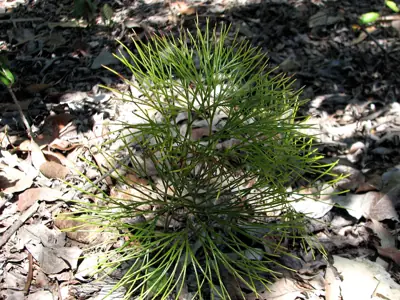

pranet · 出典付きの植物図鑑
ตาลซ่าน
Schizaea dichotoma (L.) Sm. · Schizaeaceae

Schizaea dichotoma, the branched comb fern, in the family Schizaeaceae, is a small plant usually found in open forest or heath, often on sandy soils. The habit is mostly upright, with up to 20 segments, twice or more times branched, or dichotomous. It is native to southern and southeast Asia from India eastwards, and to Australia, New Zealand, Papua New Guinea, Malesia and islands in the Pacific Ocean. It is a low-growing plant, 20 to 40 cm tall. The specific epithet dichotoma is derived from Greek, meaning "twice cut", referring to the branched nature of the fronds. This plant first appeared in scientific literature in the year 1753 as Acrostichum dichotomum, published in the Species Plantarum by Carl Linnaeus. Unusual for a fern, it is said to be a saprophyte facilitated by a fungal symbiote.
出典: Wikipedia (en): Schizaea dichotoma · CC BY-SA 4.0
異名: Acrostichum dichotomum L., Lophidium dichotomum Maxon, Osmunda dichotoma Spreng., Ripidium dichotomum Bernh., Schizaea biroi Richter, Schizaea copelandica Richter, Schizaea cristata Willd., Schizaea forsteri Spreng., Schizaea kikuzatonis M.Ogata
同定や利用は自己責任でお願いします。この図鑑だけを根拠に野生の植物を食べないでください。
出典
- 学名: World Flora Online Plant List 2026-06 · CC0 1.0
- 名前: Wikipedia の記事名と Wikidata · CC0 1.0（Wikidata）。記事名は事実
- 説明: Wikipedia (en): Schizaea dichotoma · CC BY-SA 4.0
- 食用・毒性: World Checklist of Useful Plant Species (Diazgranados et al. 2020, RBG Kew) · CC BY 4.0
- 分布: World Checklist of Vascular Plants (WCVP), RBG Kew, version 2026-06-04 · CC BY 3.0
このページは pranet のデータから自動生成しています。コードは MIT、データは項目ごとのライセンス（説明）。